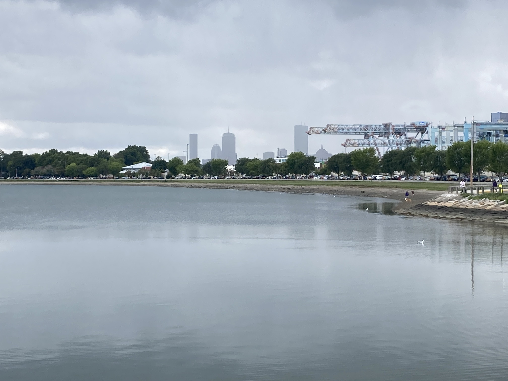
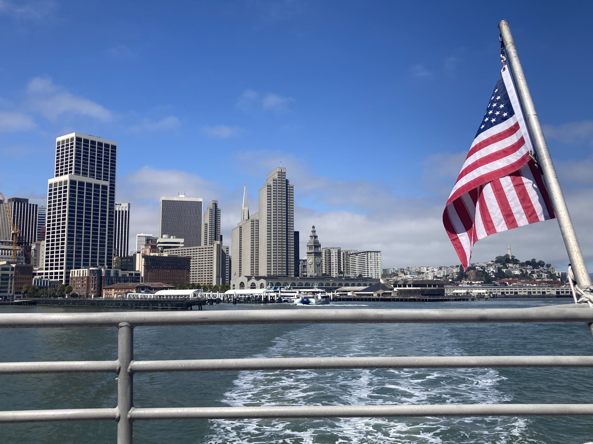
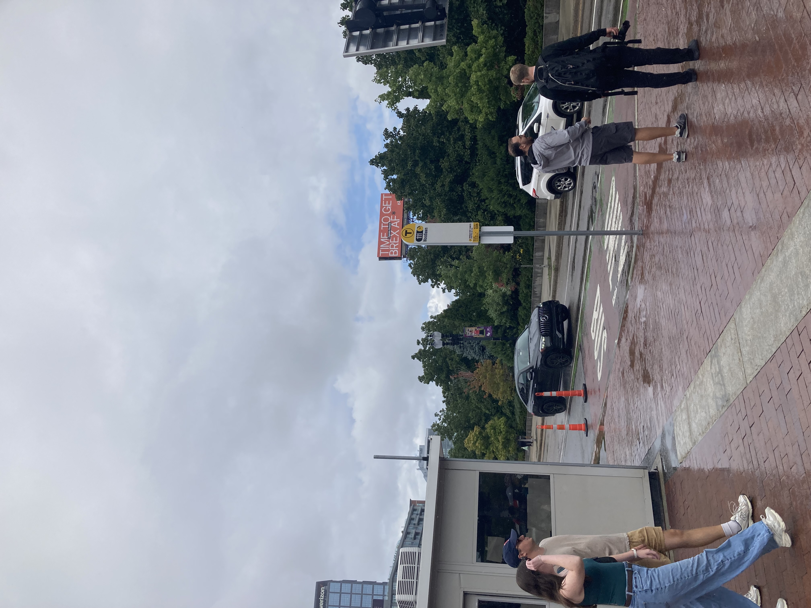
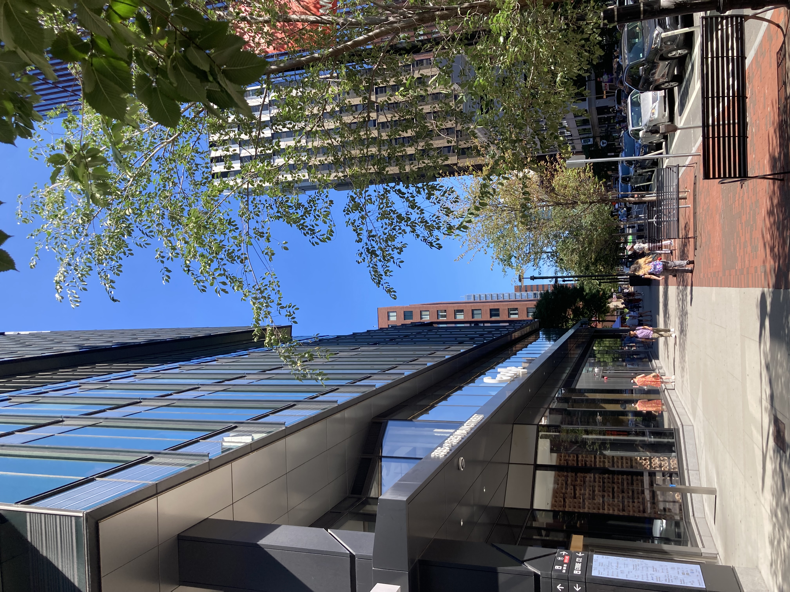
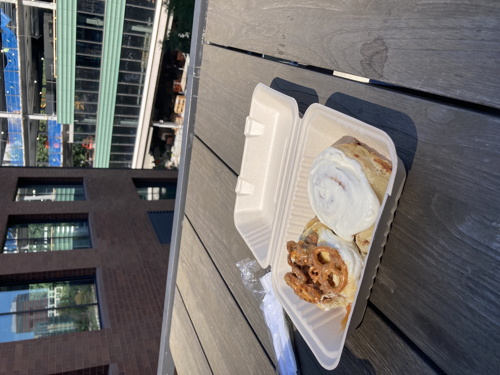
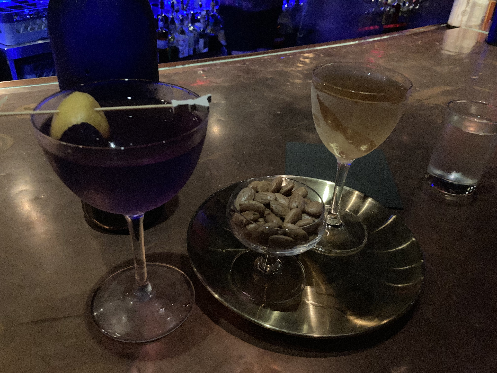
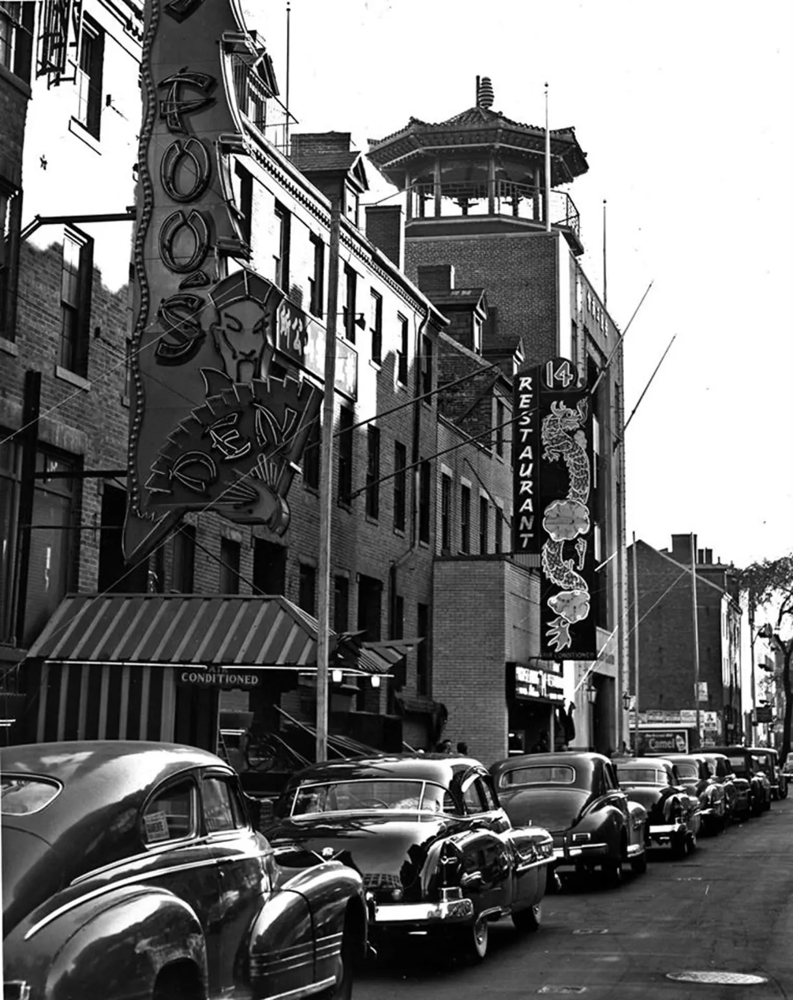
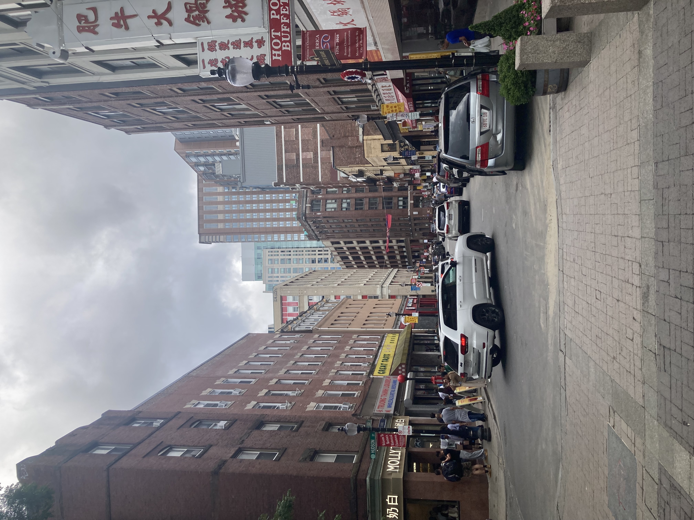

Andrew's Blog
Andrew's Blog


This month I visited my friend Peter in San Francisco. For those of you who have been following my flâneur blogs from the beginning, you may remember Peter is the originator of the Flâneur Club concept. We called our visit a "crossover episode" as Peter's college friends (us) met his San Francisco friends. During our journey, we stopped at the San Francisco Ferry Building where we saw a plaque which mentioned the clock tower on the building was constructed by the same Boston based architect that constructed Boston's South Station clock tower featured in my first blog! This discovery gave me the idea to continue the crossover episode into the flâneur work. So for August, I wanted to find a San Francisco thing back in Boston.
This task proved to be harder than I anticipated...
There are a lot of historic connections between the cities. Cross Continental trains could get you from one city to the other. During the Great San Francisco Earthquake and Fire of 1906, Boston provided lots of aid. A lot of Boston based investors have put money into the historic development of San Francisco. Unfortunately, none of these things seem to be documented in monuments anywhere here!
But we have water, and boat shipping, and fog too!


San Francisco has AI ads on all the billboards. Boston doesn't, yet, but it does have some! Look at this one I spotted on my walk to the North End.

This stuff is good, but I have to dig deeper to find some connections between the Bay Area's biggest city and the Bay State's.
Business is a big similarity. California has Silicon Valley. Boston doesn't. But it once tried. In the 1980s there were two major technology hubs in the United States, early Silicon Valley and the Route 128 corridor in Massachusetts, just outside of Boston.
Why did the one in Massachusetts fade away? There were a few commonly cited reasons:
I don't think there was one reason the nation's tech hub became the West Coast vs East Coast. It was likely a combination of many factors. And this isn't to say there are no tech companies in Massachusetts any more. There are still a lot here, especially in the bio-medical space. Silicon Valley tech companies often have regional offices in Boston. For example, here is Google's office down the street from me in Cambridge!

Behind their building they provide a nice elevated public plaza. The day I walked by, there was a market going on with a few vendors. Surprisingly, I saw my personal trainer/kick boxing coach manning a booth selling cinnamon rolls!
San Francisco is proud of their sourdough bread. One of the key foods over there is clam chowder in a sourdough breadbowl. You know which kind of clam chowder? New England style. They got that here in Boston too!
Why does this matter? I didn't get clam chowder this time. But I did get a cinnamon roll. A sourdough cinnamon roll! From a little bakery called The Slow Swirl. They were so good.

I think that counts as San Francisco culture in Boston.
Food and drink is a big cultural export. We can definitely find some other San Francisco staples here too.
Like martinis. San Francisco invented Martinis. Well, it is home of one of the origin stories. Some believe the name is derived from the Italian Vermouth brand, Martini. Some believe it was from a bartender in Martinez California. Finally, the origin I subscribe to, is that it was made in Occidental Hotel in San Francisco.
I don't really like martinis. I think it's because of the olives. Nevertheless, one Saturday night I set out to our local cocktail bar, Brick and Mortar, to order a martini. It was ok. We got one that was almond-y flavored and one that was more floral. I still don't know if I'm sold on martinis.

San Francisco is also the home of the oldest Chinatown in the US, and the birthplace of American Chinese food. Boston has a Chinatown too! And it has a historical San Francisco connection. Ruby Foo was an entrepreneur born in San Francisco who moved to Boston in 1923. She opened Ruby Foo's Den in 1929. According to the Boston Women's Heritage Trail, this was the first Chinese restaurant to "successfully cater to non-Chinese clientele". The Den is no longer around but the street is still here and a popular destination!


Lots to see this month! I enjoyed my visit to San Francisco and trying to find parts of it back home.
Subscribe to the RSS Feed to see more flâneur content!